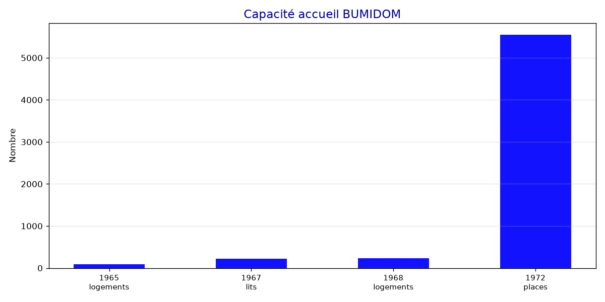

Le BUMIDOM en chiffres
Analyse de 71 documents parlementaires de l'Assemblée nationale française
94 000
Migrants 1963-74
279 M F
Budget 1981
620 000
Ultramarins 1986
5 547
Places 1972
📈 Évolution budgétaire

Le budget du BUMIDOM passe de 28,4 M F (1975) à 279,6 M F (1981) — ×10 en 6 ans.
👥 Flux migratoires

Doublement entre 1975 et 1979 : de 5 000 à 10 000 personnes/an.
🏠 Capacité d'accueil

De 86 logements (1965) à 5 547 places (1972).
📖 Ressources
📅 Chronologie essentielle
| Année | Événement | Chiffre |
|---|---|---|
| 1963 | Création | — |
| 1965 | Premiers logements | 86 logements |
| 1967 | Transit | 220 lits |
| 1968 | Logements | 234 logements |
| 1972 | Capacité | 5 547 places |
| 1974 | Cumul migrations | 94 000 personnes |
| 1975 | Flux annuel | 5 000/an |
| 1979 | Flux annuel | 10 000/an |
| 1981 | Budget | 279,6 M F |
| 1982 | → ANT | — |
| 1986 | Ultramarins | 620 000 |